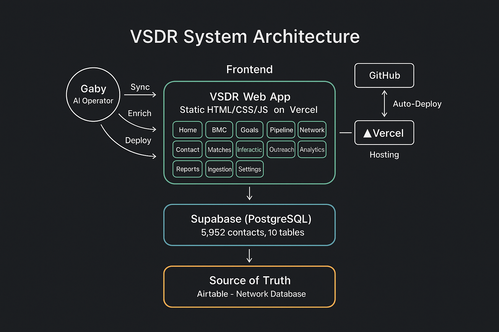
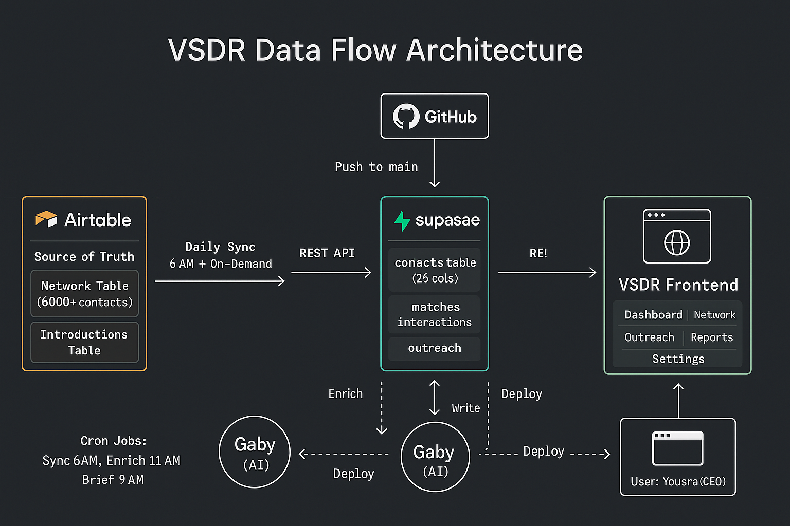
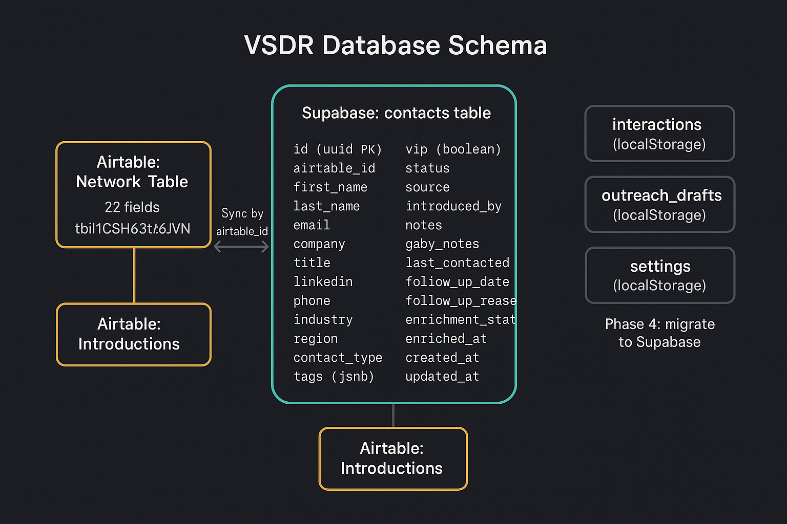
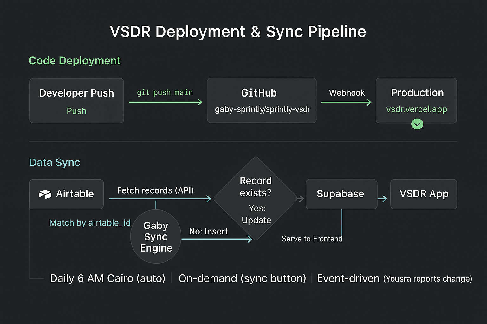

Architecture
System architecture, data flow, database schema, and deployment pipeline.
Three-tier architecture: static frontend on Vercel, Supabase PostgreSQL backend, and Airtable as the source of truth. Gaby (AI Operator) orchestrates sync, enrichment, and deployments across all layers.

Data flows from Airtable through Gaby's sync engine into Supabase, which serves the VSDR frontend via REST API. GitHub pushes trigger auto-deployment through Vercel. Cron jobs handle scheduled syncs, enrichment, and CEO briefings.

The primary contacts table (26 columns) in Supabase maps to Airtable's Network table via airtable_id. Interactions, outreach drafts, and settings currently use localStorage (Phase 4: migrate to Supabase tables).

Two parallel pipelines: Code Deployment (GitHub → Vercel → Production in <1s) and Data Sync (Airtable → Gaby Sync Engine → Supabase → Frontend). Sync triggers: daily 6 AM Cairo, on-demand via sync button, event-driven when changes are reported.
